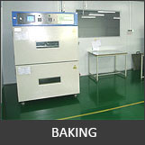
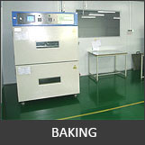
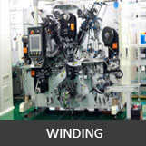
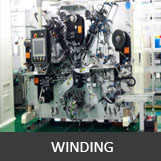
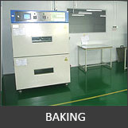
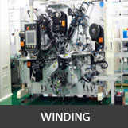

Factory Overview


 


 

SOTO Battery Technology Co., Ltd. is a Li Polymer Battery Manufacturer based in Shenzhen, China.
Which is committed to provide reliable Lithium Battery for a wide variety of applications covering portable electronic devices, customer electronics, medical, telecom, industrial, etc. SOTO custom from molds/molding of your case, printed circuit board (rigid or flex) designing, battery pack assembly, and Testing when required. SOTO will provide you with Quality, Good Service with Unbeatable Price.

